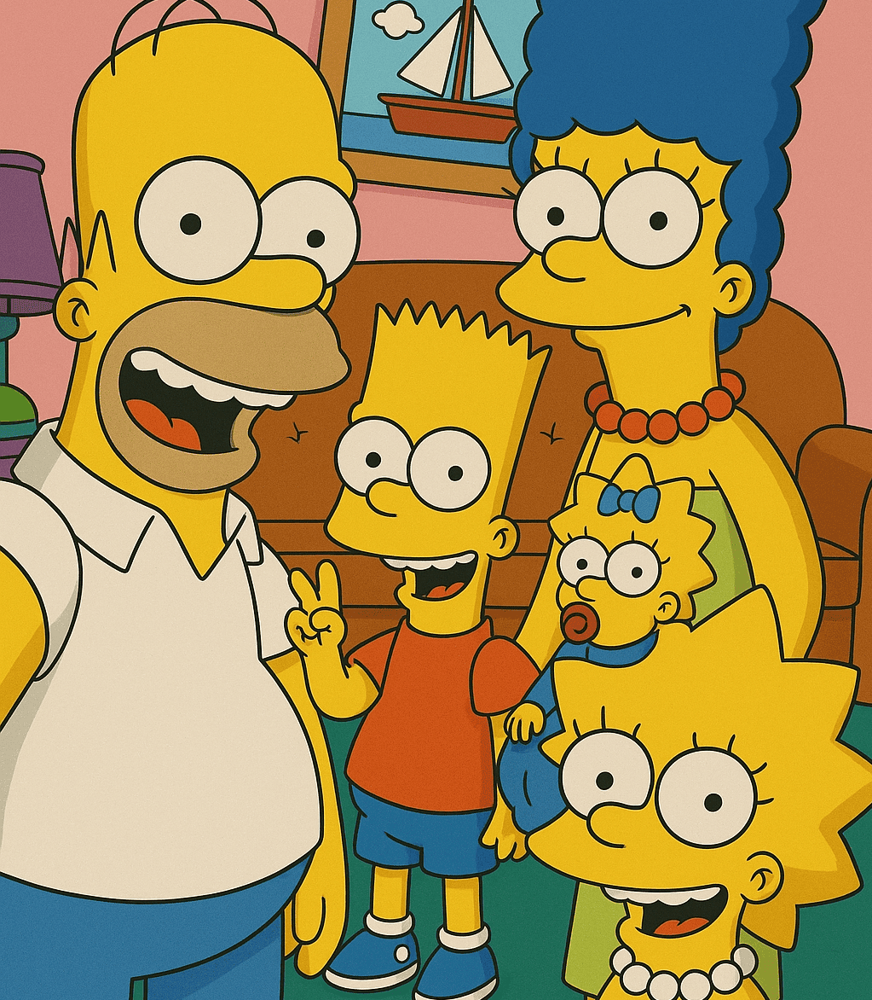
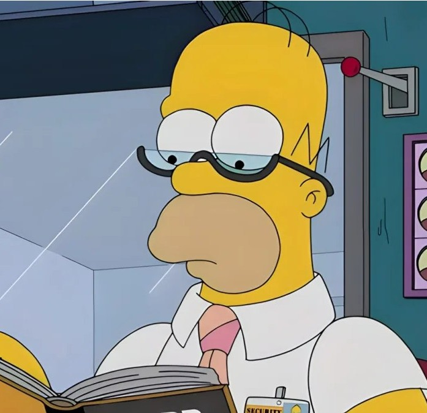
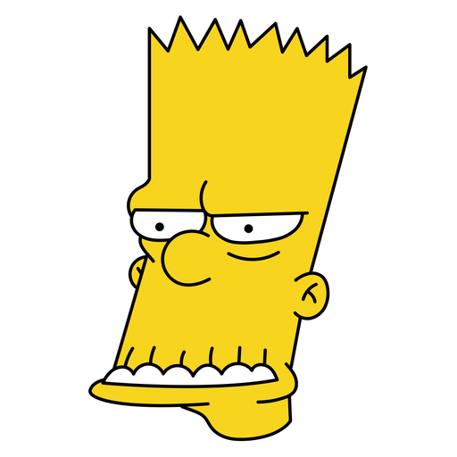
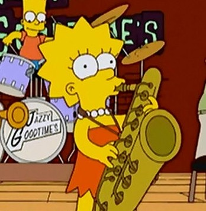
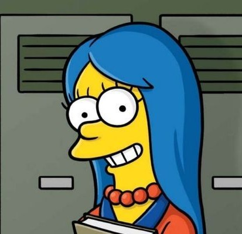
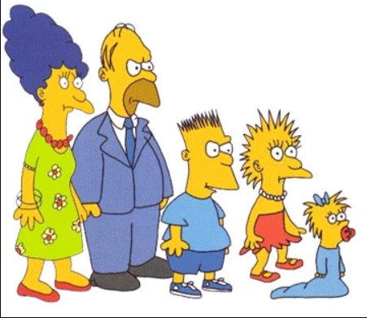

Los Simpson
En línea

Mmm... donas... ¿alguien sabe por qué nos hicieron famosos?
08:15

¡Ay caramba! Porque somos los mejores, viejo
08:16

En 1987 salimos en el Tracey Ullman Show. Luego, en 1989, empezamos con nuestro propio programa
08:20

Recuerden agradecerle a Matt Groening, niños.
08:16Exacto, mamá. Sin él no seríamos nada.
08:21

08:22
08:22
¡Ese dibujo parece hecho por un niño!
08:25Papá, ese fue el primer boceto de nuestra familia. ¡Respétalo!
08:27Jeje... ese soy yo, el rebelde desde el día uno.
08:30
08:32